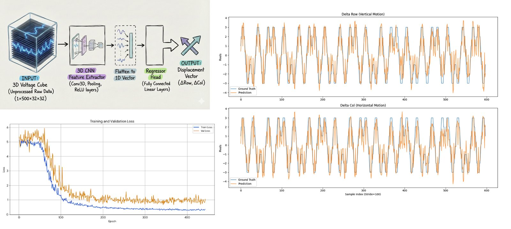

Brain Storm BCI Hackathon · January 2026 · 2nd place
Compass: real-time guidance for a 1,024-channel brain array
During neurosurgery, a thin micro-ECoG array with 1,024 channels can be placed on the surface of the brain. Compass reads the array's signals live and turns them into guidance for the surgical team. With my hackathon team, working on synthetic human brain data, I built the real-time backend and the models behind it.
- Result
- 2nd place
- When
- January 2026
- My part
- Real-time backend and models
- Data
- Synthetic human brain recordings
The problem
What made it hard
Guidance in an operating room has to be fast, stable and hands-free.
The signals are noisy and the array can drift as it moves, so the system has to denoise, decode and track in real time.
A look at the work
What the array sees

My work
What I built
Real-time backend
The backend of a full-stack web app that guides placement of the array.
Tiny denoiser
A lightweight U-Net, about 274 KB, that cleans the signals in under 5 ms on a CPU.
Decoder
A 3D CNN that decodes 2D movement-direction vectors from the array's signals.
Stable tracking
Motion-aware cluster tracking that stays stable as the array drifts.
Speed
Under 50 ms end to end, feeding the team's hands-free operating-room interface at 30 to 60 FPS.
Keep exploring
More of my work
- I analyze tremor patient data.Encora Therapeutics
- I analyze mouse brain architecture.PhD dissertation
- I analyze brain-heart connectivity.Undergraduate research
Engineering projects: Automatic head-fixing home cage and Wearable blood pressure sensor